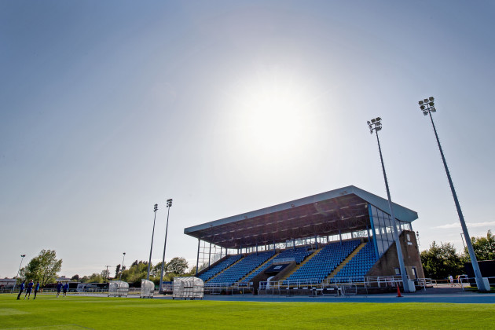

Welcome to this Waterford F.C Webpage!

Waterford FC play their home games at the Waterford Regional Sports Centre, more commonly referred to as the RSC. They have played at the RSC since 1993. The stadium has two stands and holds a capacity of 5,154 with 3,035 seats. The record attendance at the RSC was for an FAI Cup semi final game in 1997 against Shelbourne where Waterford were defeated 2–1 in front of 8,500 people, this was when spectators were permitted to stand on the running track in the ground. The RSC also hosted the 2009 League of Ireland Cup final where Bohemians defeated Waterford 3–1. Before moving to the RSC Waterford played at Kilcohan Park.